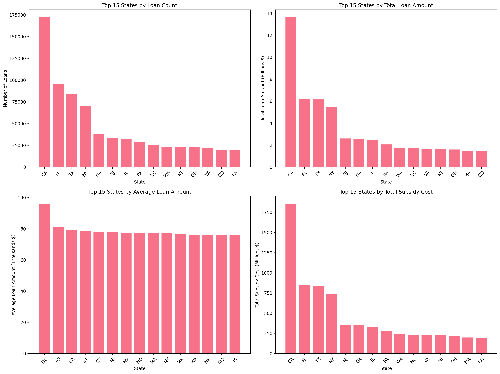
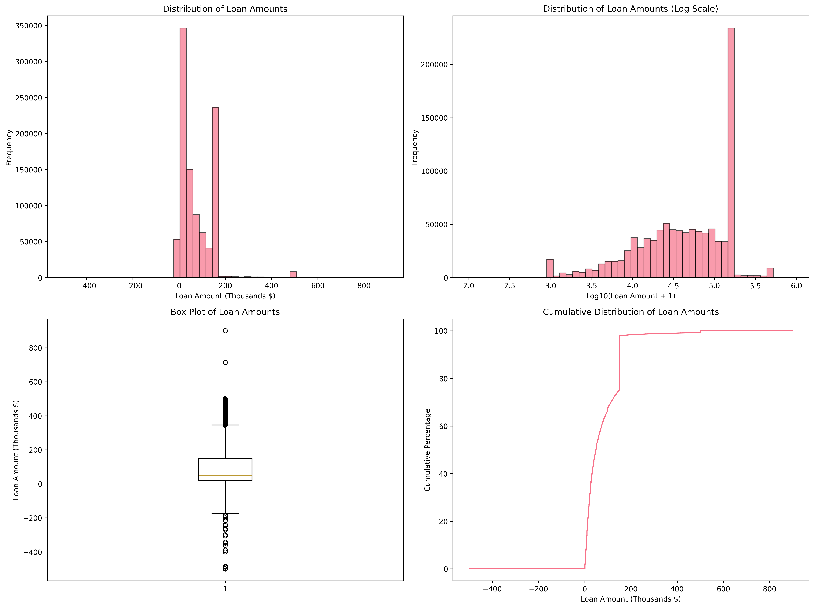
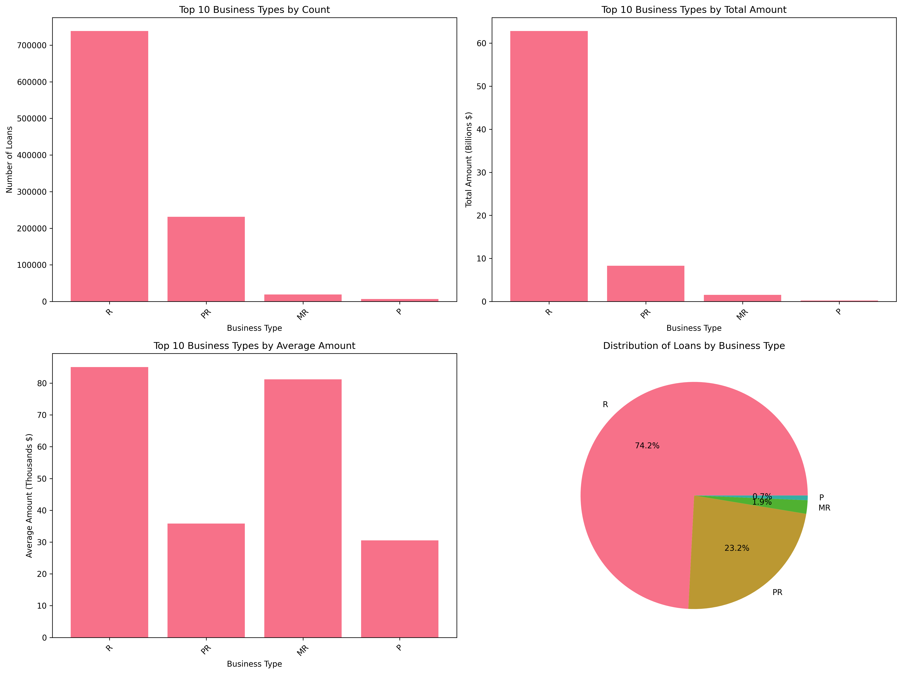
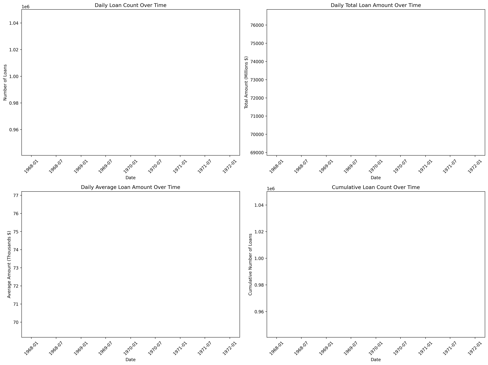

EIDL Loans Analysis
Executive Dashboard & Comprehensive Analysis
📅 April 1 - June 9, 2020 | COVID-19 Economic Relief Program
Executive Summary
This comprehensive analysis examines 995,409 EIDL loans totaling $72.85 billion distributed during the critical early months of the COVID-19 pandemic. The program delivered unprecedented economic relief to businesses across all 50 states and territories, supporting the backbone of American commerce during an extraordinary crisis.
995,409
Total Loans Approved
$72.85B
Total Funding Deployed
$73,186
Average Loan Size
$49,000
Median Loan Amount
Geographic Distribution Analysis

Geographic Insights
- California dominates with 172,307 loans totaling $13.6B (17.3% of all loans)
- Florida ranks second with 95,167 loans worth $6.2B (9.6% of total)
- Texas follows with 84,165 loans totaling $6.2B (8.5% of loans)
- New York secured 70,513 loans worth $5.4B despite pandemic challenges
- All 50 states plus 6 territories participated (56 total jurisdictions)
- Geographic distribution strongly correlates with state GDP and business density
Loan Amount Distribution

Loan Amount Insights
- 50.5% of loans were under $50,000 (supporting micro and small businesses)
- 32.5% of loans exceeded $100,000 (medium-sized business support)
- Maximum loan: $900,000 (program cap enforcement)
- Minimum loan: $7,000 (accessible to smallest businesses)
- Right-skewed distribution indicates focus on smaller enterprises
- Some negative values present (likely loan corrections or adjustments)
Business Type Analysis

Business Type Insights
- Type R (Regular): 738,407 loans (74.2%) with $85K average
- Type PR (Proprietorships): 231,197 loans (23.2%) with $36K average
- Type MR (Minority-owned): 19,181 loans (1.9%) with $81K average
- Type P (Partnerships): 6,624 loans (0.7%) with $31K average
- Regular businesses received 2.4x higher average amounts than proprietorships
- Minority-owned businesses secured substantial average loan sizes
Temporal Analysis

Data Quality Notice
Date formatting issues detected in the dataset. All records show the same processed date, suggesting batch processing or data export formatting. Original loan approval dates may require separate analysis for accurate temporal patterns.
Key Findings & Strategic Implications
01
Unprecedented Scale: Nearly 1 million loans totaling $72.85 billion demonstrates
the extraordinary scope of COVID-19 economic relief, representing one of the largest disaster
relief programs in U.S. history.
02
Geographic Equity: While larger states received more loans in absolute terms,
the program achieved nationwide coverage, ensuring economic support reached businesses in
all 50 states and territories.
03
Small Business Focus: With a median loan of $49K and 50.5% of loans under $50K,
the program successfully targeted small and micro-enterprises most vulnerable to pandemic disruption.
04
Diverse Business Support: The wide loan distribution ($7K-$900K) demonstrates
the program's flexibility in addressing varied business needs across different industries and sizes.
05
Economic Investment: $9.9B in subsidy costs represents a significant government
investment in economic recovery, with an average subsidy rate of 13.6% of loan value.
06
Business Type Equity: While regular businesses received higher average amounts,
the program successfully served diverse business structures including proprietorships,
partnerships, and minority-owned enterprises.